Parrot Perceptions
Study by Julianna Hoza
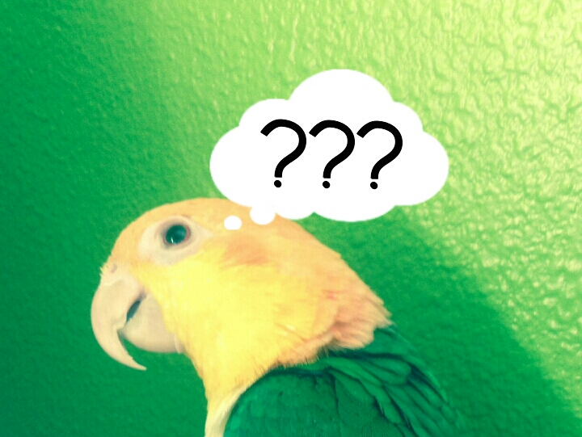
ABSTRACT
The purpose of my experiment was to determine which form of media elicits the strongest reaction from a white-bellied caique (a small parrot from
South America): still images, videos, or audio clips. I also investigated my caique’s understanding of the media displayed. I displayed nine images,
nine videos, and nine audio clips for one minute each and observed my caique’s reactions to them. I used nine “subjects” (animals displayed in the media)
in the displays, and each subject was displayed as an image, a video, and an audio clip as a control for my caique’s reaction based on the subject. I used
a scale of zero to two to measure the strength of reactions; zero was no reaction, one was a weak reaction, and two was a strong reaction. The audio clips
elicited the strongest reaction, ~1.3 (a medium strength); the videos elicited a slightly lower reaction, ~1.2; and the still images elicited the least
reaction, ~.7 (a less than weak reaction). This showed that caiques are more aware of and affected by sounds and videos than they are of still images.
They are also much more aware of movement than of still images, although images did still elicit a response. My caique also reacted in an appropriate manner
to most of the displays (e.g. fear at predators, excitement at same species), which indicates that my caique understood the content of the displays.
WHAT I TESTED
Question
Do parrots, specifically white-bellied caiques, show stronger reactions when shown videos, still images, or sound recordings of various animals?
Hypothesis
If I show a white-bellied caique several videos, images, and sounds, then it will react in varying degrees to each, because one sense (sight, movement, or sound) will be more prominent to a caique.
Variables
Independent/manipulated: Form of presentation (video, image, or sound recording).
Dependent/responding: White-bellied caique reaction strength based on visual signals (subtle, medium, or very strong/noticeable change in behavior).
Controlled:
- Same animal type tested for every display
- Same place for test every time
- Time of test
- Noises in the test area
- Objects in the test area
- Subject of the images, videos, and sounds
- Length of time the displays are shown
*Although the main purpose of my experiment was to answer this question, I also looked into a few other questions on related topics which could be answered using the data I collected. I compared the different subjects used in the displays to see which got the strongest reactions and whether these reactions were appropriate to the subject in the display. I also looked into indications of my caique’s understanding of the content of the displays.
BACKGROUND RESEARCH
Introduction
In my experiment, I will display to a white-bellied caique various images, videos, and sound recordings with different subjects. The subject, an animal, is
the content of the display. Each subject will be shown in all three forms. Then I will record my caique’s reactions to each display, and once all the data is
collected, I will use it to answer several questions pertaining to parrot awareness and intelligence, as well as my chief question: which form of presentation
elicits the strongest reaction from my caique? My theory is that one sense, sight of still things, sight of movement, or hearing, will be predominant, and
therefore one form of presentation will get stronger reactions than the other two.
History
To my knowledge, no test that is the same or even similar to mine has been done, at least not with white-bellied caiques. Many studies have been done on parrot
intelligence and senses, though, and I have used the knowledge gained from these studies while forming my own. The primary senses used by birds in the wild
are sight and hearing, and birds are especially good at sensing motion, which is why I chose the three forms of presentation that I will use in my experiment:
still images, videos (which include obvious movement), and sound recordings. In my experiment, I hope to determine which of these forms of presentation elicits
the strongest reaction from my caique. One well-documented study done on many animal species, including european magpies, is the Mirror Test. In this test,
an animal has a dot of color placed on an area of its body which cannot be seen without a mirror. The dot is made of a substance which cannot be sensed except
by sight. Then the animal has a mirror placed in front of it, and if it reaches for the dot on it, it has passed the test and is shown to have self-awareness
and an understanding that the mirror is a reflection of itself. If the animal reaches for the mirror, or does not react at all, it has failed the test. Only
one bird species has passed this test, the european magpie, but not many of these tests have been done with birds. If a bird can understand mirrors, can it
understand images or videos? Dr. Irene Pepperberg, an ornithologist dedicated to the study of avian intelligence, has done years of research with african
grey parrots, which she has shown to be highly intelligent. They can solve puzzles and communicate using the English language. Using information gathered
by scientists, I have compiled my own test to evaluate two facets of parrots: which senses are primarily used and their degree of understanding of media.
Test Animal
White-bellied caiques belong to the family Pionites, which includes only two species, the black-headed and white-bellied caiques. These small parrots are found
across much of South America, but not much is known about their natural history in the wild. They are uncommon as pets, but are growing in popularity. I own
a white-bellied caique, so this is my test animal.
Display Subjects
In my experiment, I will show my caique a series of images, videos, and sounds of various subjects (animals) and record her reactions to them. The goal is to
see if she gives a stronger reaction to one form of presentation (still image, video with movement, or sound recording) than to the others. Also, how she
reacts will give a good indication of whether or not she understands the concept of what is being displayed. For instance, if she reacts with fright to a
video of a harpy eagle, then it would indicate, although not prove, that she understands that the video represents an eagle, a natural predator to parrots.
In my experiment, I’ll look to see which subjects (animals that were displayed) elicited the strongest reactions; whether these reactions were positive or
negative; whether my caique gave stronger reactions to the bird displays than other animal subjects; whether predators were responded to in an appropriate
manner, and most importantly, whether or not one form of presentation got a stronger reaction than the others. The main question I wish to answer with this
study is the last one listed: which form of presentation elicited the strongest reactions? However, I will be looking at the other data collected to draw
other conclusions about caique awareness and intelligence.
My experiment will include nine control subjects for the different presentations. Having different
subjects for the presentations will provide a control for what my caique is reacting to. This way, I’ll know from the overall results that the stronger
reactions from one form of presentation are because of the form, and not the content. Each subject animal will be displayed first as an image, then as a
video, and lastly as a sound recording. These are the subjects I will be using, along with the images I will use to display each:
1. A White-bellied caique, the same species as my test animal.

2. A harpy eagle, a bird predator of caiques in the wild.

3. A Steller’s Jay, a bird that would not be encountered in the wild by caiques.

4. A man, the animal which the test animal spends the most time with and is bonded to.

5. A woman, the animal which the test animal spends the most time with and is bonded to.

6. A man and woman, the animal which the test animal spends the most time with and is bonded to.

7. A brown capuchin monkey, a predator of caiques in the wild which is not a bird.

8. An amazon horned frog, a species which would be encountered by caiques in the wild (same range), but which is not in any way related to caiques.

9. A white-tailed deer, a species which would not be encountered in the wild by caiques.

These animals were chosen to elicit reactions from my caique. The predators (the harpy eagle and brown capuchin monkey) should get “fear” responses from my
caique, while the people and white-bellied caique should get “positive excitement” responses. I also included subjects (one a bird species and one a non-bird
species) which would not ever be encountered in the wild, which will hopefully act as an unrecognized image. These images, the frog and the steller’s jay, are
meant to get no response. Since each image will be shown in all three forms, to answer the main question of my study, the subject of the displays is
irrelevant, but having different subjects allows me to gather more information from my data.
Reactions
When I do my experiment, I will be observing my caique closely to record her reactions to the images, videos, and sounds. As an experienced bird owner, I am
able to read my bird’s body language to understand her feelings, an important skill for any parrot owner. In order to know how a bird feels about something,
an observer must know exactly what to look for, which can take a lot of practice, as well as knowledge. In my experiment, I will record my caique’s feather
positions, eye movement, body movement, and sounds, the major categories for visual cues which can tell me what the overall reactions of my caique is. Using
these notes, I will record an “overall reaction” to each display--negative excitement, positive excitement, fear, or no reaction. Every reaction can be placed
in one of these categories. Aggression, for example, is a form of negative excitement. Positive excitement is when a bird is “happy,” but using this term is
unscientific, as it can be defined in many ways. When doing studies on bird behavior, most ornithologists refrain from using emotions to describe a bird’s
behavior. Different reactions can be noted using the visual cues listed beneath each type of reaction.
Negative Excitement
- Crown, nape, back, and leg feathers puffed
- Swaying body motion
- Beak held open as in preparation for a bite/ lunging with beak / aggression redirection, or biting a perch or other object
- Wings held out slightly
- Eye pinning, or pupils expanding and contracting quickly
Positive Excitement
- Whistling
- Deep gurgly throat sound
- Leaning toward / moving towards
- Head bobbing, when head is moved up and down quickly, a motion used to regurgitate, and something which can indicate “pleasure”
Fear
- Darting eyes
- Leaning away / moving away
- Lower mandible lowered slightly from upper mandible
- Wings lowered
- feathers slicked, or in some cases belly feathers puffed and bird unmoving
- Shrieking, or in some cases silence
No Reaction
- No change in feather position
- No change in eye position
- Standard movement only
EXPERIMENTAL PROCEDURE
Materials
- 9 still images, one of each subject listed in Table 1--each subject should be clearly shown
- 9 videos, one of each subject listed in Table 1--videos should include obvious movement
- 9 sound recordings, one of each subject listed in Table 1--sounds should be clear, without any background noise
- 1 white-bellied caique
- 1 television display screen and speakers to display the images, videos, and sounds
Procedure
1) For each subject, execute the following sub-procedure in each form of presentation (first image, then video, then sound recording):
A. Check the caique’s state and do not show the display until the caique is in a normal state (not agitated, scared, excited, aggressive, etc.)
B. Display the presentation for 1 minute. Repeat the display if it is not 1 minute long or longer for videos and sounds, and for the sounds leave the
television screen black.
C. Record the caique’s reactions in Table 2. Reactions. Rate each reaction signal on a scale of 0-2, 0 being no reaction, 1 being a weak reaction, and 2
being a strong reaction. In the Overall Reaction column, record notes and the strongest signal reaction strength (0, 1, or 2).
2) Use the data from Table 2 to create Table 3, to show the general reactions to images, videos, and sounds. Use a bar graph to visualize and analyze data.
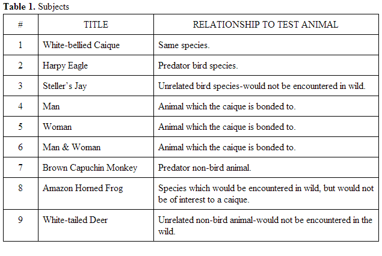
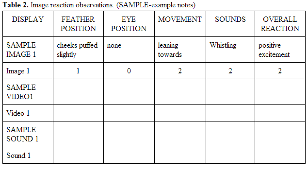
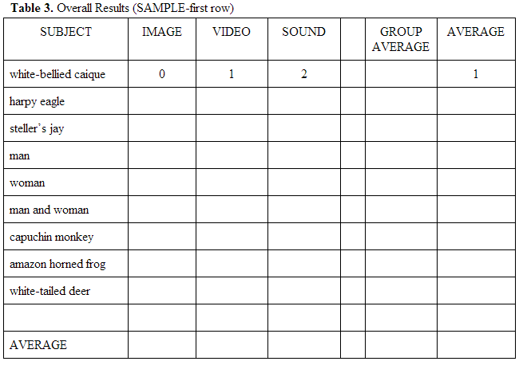
DATA ANALYSIS
I used nine subjects in my experiment, each one chosen to have a certain relationship to the test animal, my white-bellied caique (Table 1). Each subject was
displayed as a still image, a video, and an audio clip, so there were 27 displays total.
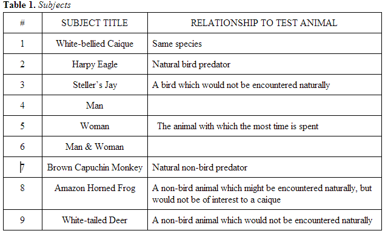
In my experiment, I recorded my observations for each of the 27 displays in Table 2. In this table, each display covers two rows. The first row gives the
subject of the display (i.e, what was displayed), notes on my caique's reactions to the display, and my assessment of the overall reaction. The second row
gives the type of display (i.e., image, video, or audio clip) and reaction strength with respect to each signal. I used four general visual signals (feather
position, eye position, movement, and sounds) to help me estimate the strength of the reaction overall. For every display, I recorded signals in the boxes
indicated by the labels in the table below, and I gave each signal a strength (zero, one, or two). The highest rating that one of these signals received was
the overall reaction strength for that display.
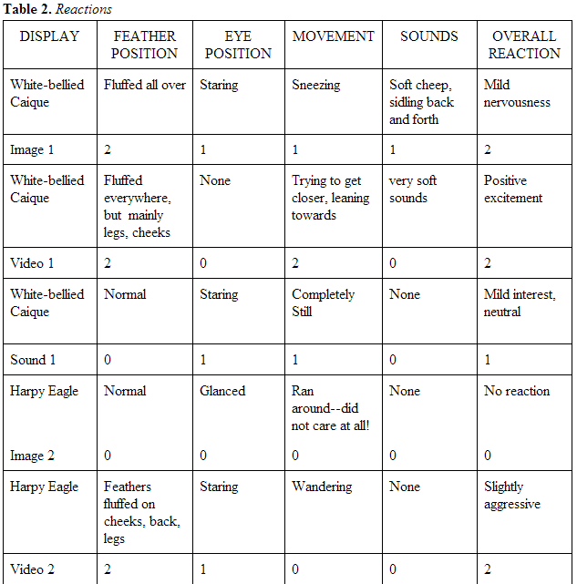
 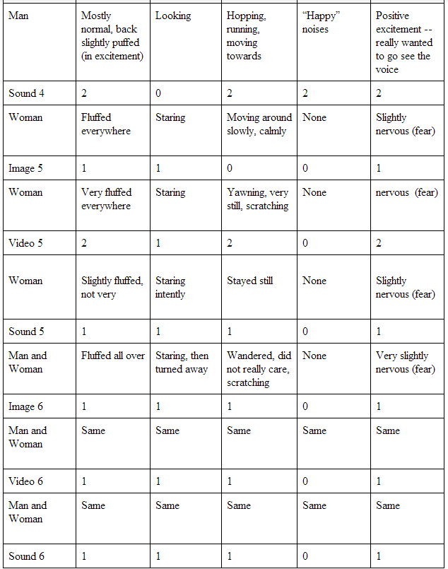
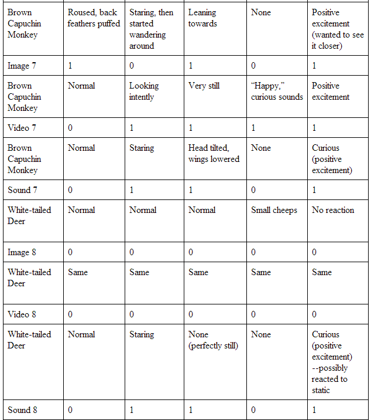
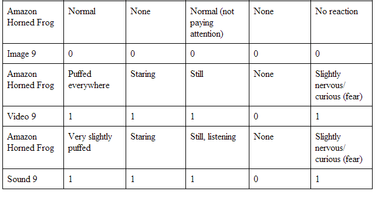
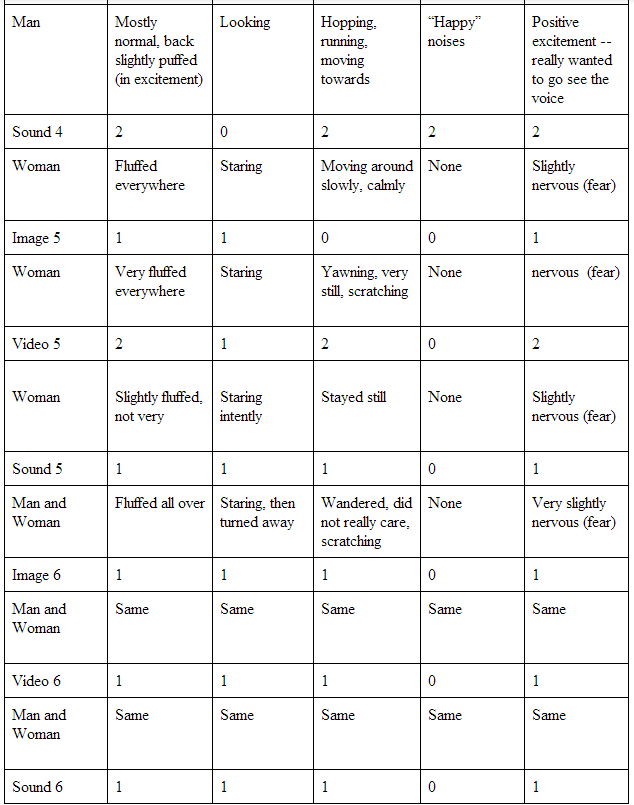
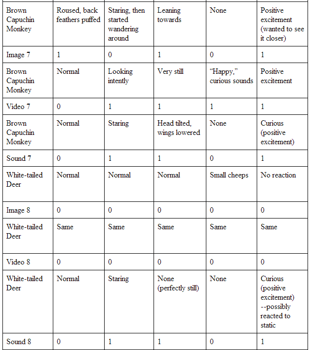
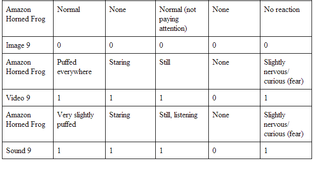
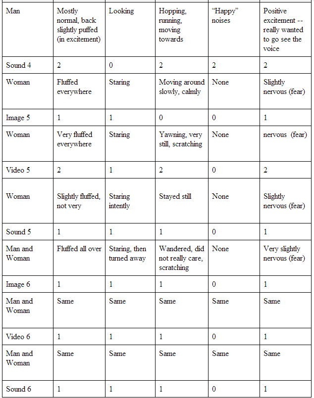
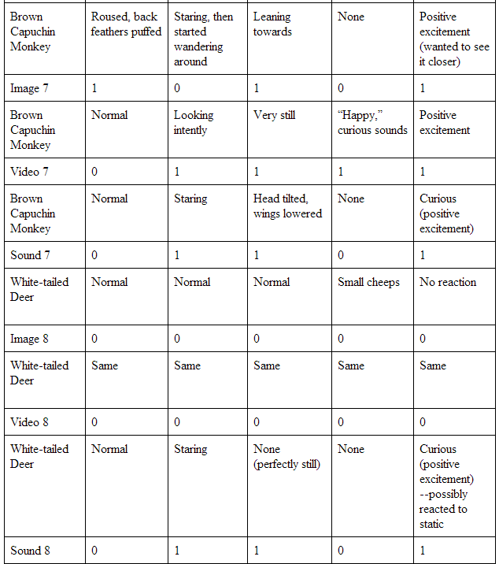
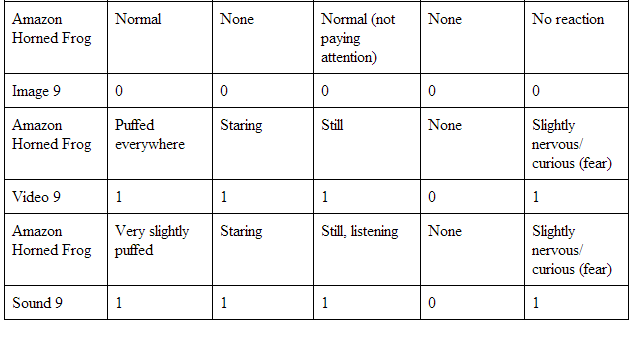
Using the “overall reactions” from this table, I compiled the information into Table 3. Overall Reactions.
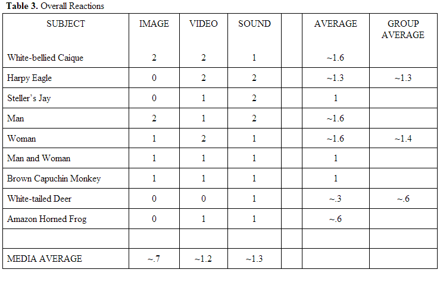
Table 3 shows all my final results. The form of media which elicited the strongest reaction from my caique was the sounds, with an average reaction of ~1.3.
This was between a weak (1) and a strong (2) reaction, so it could be called a medium strength reaction. The videos only received a slightly lower average
reaction strength of ~1.2, so the videos and sounds were fairly comparable in the strength of reactions. The still images, however, elicited a much weaker
reaction, on average, than the videos and sounds, showing that caiques are more affected by movement and sounds than they are by still images. This makes
sense, because in the wild a caique needs to be aware of movements and sounds in the surrounding forest in order to stay alert for predators. Caiques and
other parrots are prey, so they are always aware of possible danger. Still objects, which can be compared to the still image form of media, usually don’t pose
as a threat to caiques in the wild, so caiques aren’t as attuned to inanimate objects. Sound is an essential part of caique life, in captivity or in the wild,
so it is no surprise that my research showed that the audio clips elicited the strongest reaction. Much of parrot communication is vocal and loud, and parrots
use their voices for practically every aspect of life: contact calls while foraging, alarm calls while in danger, courtship songs during the breeding season,
and all sorts of noises every day.
I also found the average of each group of subjects (birds, humans, and non-bird animals), so that I could compare which
subjects elicited the strongest reactions. This helps to determine how well my caique understood the content of the displays she was shown. The human group
elicited the strongest reactions on average (~1.4), which I suspect is because this group was most familiar to the test animal. Although the test animal was
a bird, she is the only bird I own and therefore only rarely comes in contact with other birds. Most of her time is spent with her artificial “flock” of humans.
The bird group did elicit almost as strong a reaction as the human group, with an average reaction of ~1.3. My hypothesis is that since my caique was familiar
with people and with birds, she was able to identify the subject of the displays with people and birds, but since she was not familiar with the non-bird
animals, she was not able to identify the subjects of those displays, and therefore they did not elicit as strong of a reaction. This point is emphasized when
the individual display results are looked at. The strongest reactions were for the white-bellied caique, the man, and the woman, which are the three subjects
that my caique almost exclusively interacts with. Although my caique has seen some of the other subjects at a distance, or had contact with an animal similar
to some of the other subjects, my caique is not familiar with them, like she is with the white-bellied caique, her own species, and the man and the woman, her
caretakers. I cannot prove that my caique understood what was shown in the displays, but my hypothesis, based on the information cited above, is that my
caique was able to understand the representations of things she had seen in real life.
CONCLUSION
Summary
The purpose of my experiment was to determine which form of media elicits the greatest reaction from a white-bellied caique: still images, videos, or
audio clips. I also investigated the level of understanding my caique, the test animal, showed of the content of the displays. In my experiment, I showed
my caique nine still images, nine videos, and nine audio clips for one minute each, and I observed and evaluated my caique’s responses to each, recording
my observations (see Table 2. Reactions). I used nine “subjects” -- animals displayed -- in the displays: a white-bellied caique, a harpy eagle, a steller’s
jay, a man, a woman, a man and woman together, a brown capuchin monkey, a white-tailed deer, and an amazon horned frog. Each subject was chosen because it
has some relationship to the test animal, a white-bellied caique (see Table 1. Subjects). There were three bird subjects, three human subjects, and three
non-bird animal subjects. For the birds, there was a white-bellied caique, a bird of the same species as the test animal; a harpy eagle, a natural predator
of the test animal; and a steller’s jay, a bird which would never be encountered by the test animal naturally. The human subjects were the animal that the
test animal spends the most time with and is bonded to. I used humans as subjects because they would be recognized and would possibly elicit a strong
reaction. I put a man by himself, a woman by herself, and a man and woman together to control for my caique’s reaction, which could be affected by the
gender of the subject. The last group of subjects was “non-bird animals”: a brown capuchin monkey, a natural predator; a white-tailed deer, an animal
which would not naturally ever be encountered by the test animal; and an amazon horned frog, an animal which might be encountered in the wild but would
not be of interest to the test animal. For each display I observed an overall reaction of zero (no reaction), one (weak reaction), or two (strong
reaction) based on visual signals (e.g. feather position, movements, sounds, etc.).
Results
Overall, the sounds elicited the strongest reactions from my caique, with an average reaction of ~1.3, somewhere between a weak (1) and strong (2) reaction.
Videos recieved the next strongest reactions with an average of ~1.2, and the still images received the lowest reaction strength with an average of ~.7, a
less than weak reaction. From this data, I can conclude that caiques are more affected by sounds and movement than still images; however, still images did
still elicit some reaction, even if it was weak. In the wild, a caique would need to be acutely aware of all sounds and movements in order to be on guard for
predators, because the slightest movement or smallest sound could warn of possible danger. Caiques and other small parrots are prey in a rainforest full of
predators, so they must constantly be aware of sounds and animals around them. Still objects, though, usually do not pose threats to caiques, so it makes
sense that a caique would not react as strongly to an image.
As I stated earlier, I investigated more than just which sense of a caique is most prominent; I
also looked at my caique’s level of understanding. Each subject was displayed as an image, video, and sound, and I found my caique’s average reaction to each
subject. For instance, the harpy eagle subject got a “zero” reaction for the image, a “two” reaction for the video, and a “two” reaction for the sound, giving
the harpy eagle an average reaction of ~1.3, a medium strength reaction. The subjects with the highest average reactions were the white-bellied caique, the
man, and the woman -- the subjects which my caique is most familiar with. Each of these subjects elicited a reaction of ~1.6, a fairly strong reaction. The
other subjects were all animals with which my caique has never had direct contact, excluding the subject of a man and woman together, so the fact that my
caique gave a stronger reaction to the caique, the man, and the woman indicates that she understood the content of the displays. She also reacted exactly the
same way to the displays of the man and of the woman as she does when introduced to a new person. Parrots are naturally shy of any person they don’t “know,”
and they have to warm up to a person before they will be comfortable around the person. When parrots first see or hear a new person, they are usually quite
wary and nervous, and this is exactly how my caique reacted to the displays of the people. My caique gave a weak reaction to each display of the man and woman
together, so my guess is that she confused by the two people together and had a harder time comprehending what the displays were showing. The single man and
single woman may have been easier for her to identify as people. My caique responded with a slightly nervous reaction to the image of another caique, and was
somewhat interested in the sound of the other caique, but was very excited when she saw the video of the caique, trying to go over to the video to “meet” the
other bird. My caique gave the weakest reaction to the white-tailed deer, which also supports my hypothesis that she understood the content of the displays,
because she had no way of knowing what the animal was. She has never seen any sort of deer before, and in the wild, she wouldn’t have any interest in a deer,
so she had no natural instincts telling her how to react to the deer. Overall, the people, the animal my caique spends the most time with, received the
strongest reaction (~1.4); the birds received a slightly lower average reaction (~1.3); and the non-bird animals, which my caique was least likely to
recognize received the lowest average reaction ( ~.6). My caique gave strong reactions to the subjects she was familiar with and weak reactions to subjects
she did not recognize.
Errors
During my experiment, my dog was confined in another nearby room so as not to disturb the experiment, but this “solution” actually backfired. Partway
through the experiment, my dog began pawing at the door because he wanted to come out, which distracted my caique. Partway through some of the displays,
she changed from showing reactions to the displays to showing reactions to my dog. Although I was able to tell which she was reacting to and record only
reactions to the experimental displays, the sounds from my dog could still have affected my caique’s reactions to some extent.
Also, my sample size was extremely small (one bird), so I am using the results from my one specimen to generalize. My hypothesis is that results would be
similar for other caiques and maybe even for other parrot species.
Applications
The information gained from this experiment is very useful to anyone who owns a caique, because the more an owner understands about his or her pet’s
nature, the better the relationship between the owner and animal will be.
The information that caiques (and probably other parrots) give strong reactions to sounds compared to visual cues could also be very useful in training,
because a trainer can use a visual or auditory cue for a trick or behavior, and my research indicates that caiques might be easier to signal with auditory
cues than with visual cues.
Since my experiment indicates that caiques can understand the content of images and other media, it’s important for owners, trainers, veterinarians, and
anyone else in contact with these animals to be conscious of the images and other media in a room with caiques. For instance, an avian veterinarian might
not want to have pictures of dogs on the walls of a room that birds go in, because the bird could be scared by the images.
I have also discovered indications of caique intelligence, and I believe it is important for us to understand the intelligence of animals around us. I
showed that caiques most likely understand, at least to some extent, the content of media, which shows that caiques can understand representations of
things they have seen in real life.
FUTURE RESEARCH
In the future, I would like to investigate further on how much parrots understand the content of displays. My caique seemed to react in appropriate ways
to the displays of all kinds (images, videos, and sounds) that showed familiar animals (people and birds), but the animals which my caique has not come
into contact with (the frog, deer, and monkey) elicited hardly any reaction at all. I would like to do further research to find out whether or not parrots
actually understand what displays represent.
ACKNOWLEDGEMENTS
I want to thank my parents for their support during my project, particularly my dad, who helped me carry out my experiment. Without him, I could not have
gotten the results I did. Also, I want to give a thank you to both my parents for their help with editing my report. Without them, it would surely be full
of typos. Finally, I want to thank my science teacher, Mr. Kuss, for his help and support with my project, from coming up with an idea to presenting the
results.